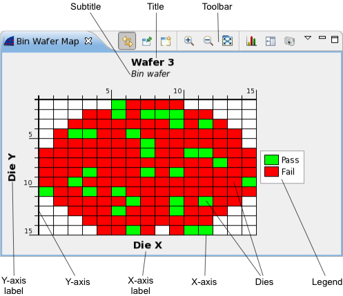

Bin wafer map view
The bin wafer map displays how good and bad dies are distributed on a wafer. It can also display overlays of two or more wafers to easier spot trends in failure distribution.
A bin wafer map is opened by choosing from the shortcut menu of a Wafer summary tab. It can also be opened using the New button (see below) from the toolbar of another bin wafer map or using the menu command.
The bin wafer map has three modes:
- One wafer: The map shows for each die on the wafer whether it passed or failed. (This mode is shown below.) If the view is large enough, the software bin number of each failed die is displayed in the die's cell of the map.
- Two wafers: The map shows for each die whether is passed both times, failed both times, went from fail to pass, or went from pass to fail.
- Three or more wafers: The map shows for each die the percentage of the wafers on which this die passed.

These are the elements in the main area of the chart (for the toolbar and shortcut menu, see below):
- Title: By default, the number of the wafer. You can edit this label in the wafer map properties.
- Subtitle: By default, this is "Bin wafer". You can edit this label in the wafer map properties.
- Toolbar: The action buttons of the chart. See the Toolbar section, below, for details.
- Y-axis label: By default, this label is "Die Y". You can edit this label in the wafer map properties.
- Y-axis: The axis for the y-coordinates of dies on the wafer. You can change the orientation and direction of this axis in the preferences.
- X-axis label: By default, this label is "Die X". You can edit this label in the wafer map properties.
- X-axis: The axis for the x-coordinates of dies on the wafer. You can change the orientation and direction of this axis in the preferences.
- Dies: The individual dies on the wafer.
Each die is marked with a color (green for 100% pass, red for 100% fail, different colors for fail percentages in between). If the chart is large enough, the software bin of failed dies (in one-wafer mode) or an alphanumeric code for the pass percentage (if two or more wafers are displayed) is noted on the die.
Hovering the mouse over a die displays the coordinates and basic information about the die in a tooltip.
By default, dies are rectangular to best use the available space in the view. If you prefer square dies, you can specify in the preferences that they always must be square.
- Legend: A description of the colors and alphanumeric codes used in the map. You can configure the display of the legend in the preferences.
Toolbar

The toolbar of a bin wafer map view includes these buttons:
- Link: Links the display in the view to the selected row in the data navigation view.
In this mode, if the selection in the data navigation view changes, the display updates automatically.
- Pin: Freezes the display in the view.
In this mode, the view keeps displaying the rows it currently displays, even when the selection in the data navigation view changes. Dynamic updating can be resumed by clicking the Link button.
- New: Creates a new bin wafer map view.
- Zoom In: Enlarges a section of the chart to show more detail.
- Zoom Out: Reduces the scale of the chart to show more data.
- Fit to Screen: If this button is activated, resizing the view automatically resizes the map in the view as well. If the button is deactivated, the map is always the same size, even if the view is made bigger or smaller.
- Properties: Opens the Bin Wafer Map Properties dialog.
- Statistics: Displays the data that underly the graph.
For single-wafer maps, it displays the number of dies in each software bin. For multi-wafer maps, it displays the number of dies in each failure category.
It also displays the underlying summary information for the selected wafers. The information categories are the same as the columns in wafer summary tabs.
Clicking the button again hides the values and displays the map.
- Image: Clicking this buttons lets you save the current chart display as a PNG or JPEG image.
Shortcut menu
The shortcut menu of a bin wafer map view contains this command:
- Show in Device Summary: Right-clicking a cell in wafer map and choosing this command highlights the row containing the device data in the Device summary tab.
- Properties: Opens the Bin Wafer Map Properties dialog
Functional changes
- Introduced in SmarTest 7.2.0
- SmarTest 7.2.2: Added Show in Device Summary shortcut menu command.
- SmarTest 7.2.2: Added option to export charts as JPEG images